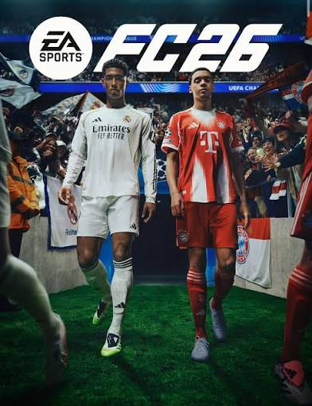

Sobre o jogo
O FIFA 26 é um jogo de futebol feito pela EA Sports. Na verdade o nome oficial agora é EA Sports FC 26, porque a EA perdeu a licença da FIFA, mas todo mundo ainda chama de FIFA.
O jogo saiu em 2025 para PlayStation, Xbox, PC e Nintendo Switch. Nele da para jogar com times e jogadores reais de várias ligas do mundo, como o Brasileirão, a Premier League e a La Liga.

Modos de jogo
O jogo tem vários modos, os que eu mais gosto são esses:
- Ultimate Team: você monta seu time com cartas de jogadores.
- Modo Carreira: você vira técnico ou jogador e joga várias temporadas.
- Clubes Pro: você cria um jogador e joga online com os amigos.
- Partida Rápida: um jogo normal contra o computador ou um amigo.
Dicas para quem está começando
Essas são as dicas que me ajudaram quando eu comecei a jogar:
- Comece jogando no nível mais fácil para aprender os comandos.
- Treine os passes antes de tentar dribles difíceis.
- Não corra o tempo todo, porque o jogador cansa.
- Use o modo treino para aprender a cobrar faltas e pênaltis.